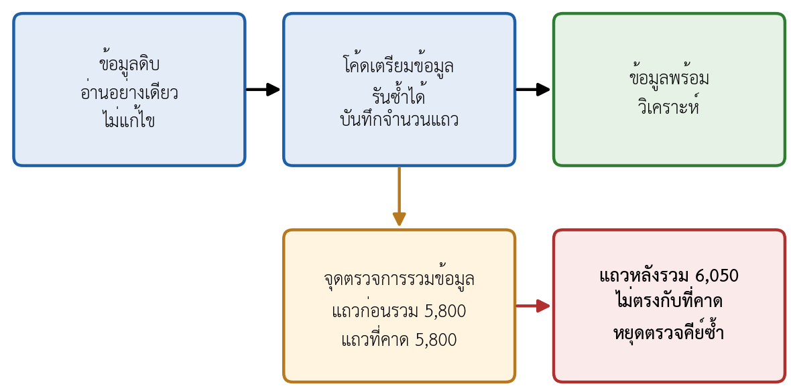
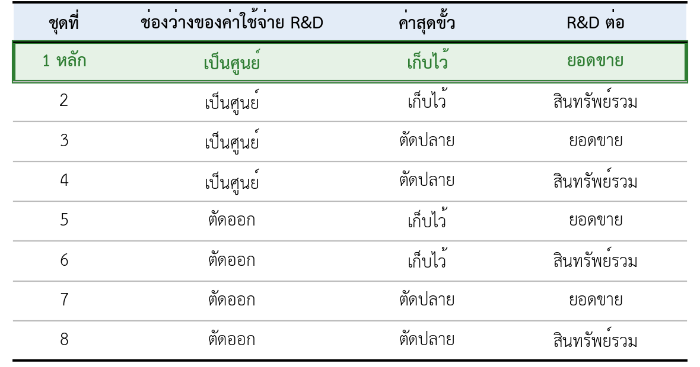

บทที่ 9 ตรวจคุณภาพ เตรียมข้อมูลด้วยโค้ด และตรวจความทนทาน
เมื่อศึกษาบทนี้จบแล้ว นิสิตสามารถ
- จัดทำรายงานผลตรวจคุณภาพข้อมูลที่เทียบกับแผนภาพเชิงสาเหตุได้
- เขียนโค้ดเตรียมข้อมูลที่อ่านจากข้อมูลดิบและรันซ้ำได้ พร้อมบันทึกจำนวนแถวก่อนและหลังการรวมข้อมูลได้
- ระบุทางเลือกที่สมเหตุสมผลในการเตรียมข้อมูล และจัดเป็นชุดทางเลือกสำหรับวิเคราะห์ความทนทานได้
- อธิบายข้อจำกัดเชิงสาเหตุของงานตนเองจากแผนภาพเชิงสาเหตุได้
- จัดทำผลวิเคราะห์หลักตามแผนและผลความทนทานของงานตนเองได้ (ใบงานที่ 9)
ความนำ
บทที่ 8 ให้นิสิตรู้จักชุดข้อมูลจากเอกสาร บทนี้เป็นบทที่นิสิตแทร็กข้อมูลทุติยภูมิทำงานกับไฟล์ข้อมูลจริง ตั้งแต่ตรวจคุณภาพ เตรียมข้อมูลให้พร้อมวิเคราะห์ ไปจนถึงวิเคราะห์ตามแผนที่ลงทะเบียนไว้ และตรวจว่าผลเปลี่ยนหรือไม่เมื่อเปลี่ยนทางเลือกที่สมเหตุสมผล
บทที่ 3 แสดงว่านักวิเคราะห์หลายทีมที่ใช้ข้อมูลชุดเดียวกันได้ผลต่างกันมาก และความต่างนั้นไม่ได้มาจากความไม่รู้ของนักวิเคราะห์ (Silberzahn et al., 2018, p. 338; Breznau et al., 2022, p. 4) ในงานข้อมูลทุติยภูมิ ทางเลือกเหล่านี้จำนวนมากอยู่ในขั้นเตรียมข้อมูล ซึ่งผู้อ่านมักไม่เห็น บทนี้จึงเน้นสองเรื่อง เรื่องแรกคือทำให้ทุกการเตรียมข้อมูลอยู่ในโค้ดที่ผู้อื่นรันซ้ำได้ เรื่องที่สองคือแสดงให้เห็นว่าผลขึ้นกับทางเลือกในการเตรียมข้อมูลมากเพียงใด
นิสิตแทร็กข้อมูลปฐมภูมิควรอ่านหัวข้อ 9.2 และ 9.3 ด้วย เพราะโค้ดที่ทำซ้ำได้และการตรวจความทนทานใช้กับงานแบบสอบถามเช่นกัน
9.1 ตรวจคุณภาพข้อมูล
ผู้เขียนเสนอให้นิสิตตรวจคุณภาพข้อมูลก่อนตัดสินใจว่าจะเตรียมอย่างไร และเขียนผลเป็นรายงานที่มีรายการตามตารางที่ 9.1 รายงานนี้ใช้ตารางตัวแปรที่ใช้จากบทที่ 8 เป็นฐาน เพราะนิยาม หน่วย และรหัสข้อมูลสูญหายของแต่ละตัวแปรบอกว่าค่าใดผิดปกติ
ตารางที่ 9.1 รายการตรวจคุณภาพข้อมูล (ผู้เขียนเสนอ)
| รายการ | สิ่งที่ตรวจ | ตัวอย่างปัญหา |
|---|---|---|
| ค่านอกขอบเขต | ค่าที่เกินขอบเขตตามนิยามในเอกสาร | ตัวชี้วัดที่ประกาศเป็นคะแนน 0 ถึง 100 มีค่าเกิน 100 |
| รหัสข้อมูลสูญหาย | รหัสในตารางที่ 8.3 ถูกแปลงเป็นค่าสูญหายแล้วหรือยัง | ค่า 99 ยังอยู่ในการคำนวณ |
| ข้อมูลสูญหาย | จำนวนและรูปแบบรายตัวแปร รายปี และรายกลุ่ม | ช่องว่างกระจุกในบริษัทขนาดเล็ก |
| การกระจายและค่าสุดขั้ว | ค่าที่สูงหรือต่ำผิดปกติ และสาเหตุที่เป็นไปได้ | ROA สูงมากในปีที่บริษัทมีสินทรัพย์น้อยมาก |
| ความต่อเนื่องข้ามปี | นิยามหรือการจัดกลุ่มที่เปลี่ยน | รหัสอุตสาหกรรมเปลี่ยนระบบกลางช่วง |
| ตัวแปรกวน | ตัวแปรกวนในแผนภาพมีในข้อมูลหรือไม่ | ไม่มีตัวแปรที่วัดความสามารถในการดูดซับความรู้ |
ที่มา ผู้เขียนเสนอ
ข้อมูลสูญหายในงานข้อมูลทุติยภูมิใช้หลักเดียวกับบทที่ 7 การตัดรายที่ข้อมูลไม่ครบใช้ได้ทั่วไปเฉพาะเมื่อข้อมูลสูญหายแบบสุ่มโดยสมบูรณ์ (Schafer & Graham, 2002, p. 155) และแนวปฏิบัติที่แนะนำคือ ML และ MI ภายใต้ข้อตกลง MAR (Schafer & Graham, 2002, p. 173) ถ้าช่องว่างในข้อมูลอาจหมายถึงศูนย์ ต้องตัดสินความหมายก่อนตามบทที่ 8 เพราะศูนย์ไม่ใช่ข้อมูลสูญหาย
แถวสุดท้ายของตารางเชื่อมกับแผนภาพเชิงสาเหตุในบทที่ 2 Hünermund และคณะ (2025, p. 8) ให้วาดแผนภาพโดยไม่ขึ้นกับว่ามีข้อมูลหรือไม่ และบันทึกตัวแปรควบคุมที่วัดไม่ได้ไว้ด้วย ขั้นนี้คือจุดที่นิสิตรู้แน่ว่าตัวแปรใดวัดไม่ได้ ตัวแปรเหล่านั้นใช้ในหัวข้อ 9.4
9.2 เตรียมข้อมูลด้วยโค้ดที่ทำซ้ำได้
Wilson และคณะ (2017, p. 2) เสนอให้เก็บข้อมูลตามที่ได้มาครั้งแรก เพราะการเขียนทับข้อมูลดิบด้วยฉบับที่ทำความสะอาดแล้วทำให้รันการวิเคราะห์ซ้ำตั้งแต่ต้นไม่ได้ และชี้ว่าการจัดการข้อมูลเป็นส่วนหนึ่งของการวิเคราะห์ ถ้าไม่บันทึกทุกขั้นจะทำซ้ำไม่ได้ วิธีที่ดีที่สุดคือเขียนสคริปต์สำหรับทุกขั้น (Wilson et al., 2017, p. 5) ข้อมูลที่เตรียมแล้วควรอยู่ในรูปที่หนึ่งคอลัมน์เป็นหนึ่งตัวแปร และหนึ่งแถวเป็นหนึ่งหน่วยสังเกต (Wilson et al., 2017, p. 5) สำหรับผู้ที่ยังใช้ตารางคำนวณ Broman และ Woo (2018, บทคัดย่อ) เสนอหลักการ เช่น ไม่คำนวณในไฟล์ดิบ และไม่ใช้สีเป็นข้อมูล
ภาพที่ 9.1 แสดงลำดับงานที่ผู้เขียนเสนอ ข้อมูลดิบอยู่ในโฟลเดอร์ที่ไม่แก้ไข โค้ดอ่านจากโฟลเดอร์นั้นเสมอ และทุกขั้นที่เปลี่ยนจำนวนแถวต้องบันทึกจำนวนก่อนและหลัง

ที่มา ผู้เขียนเสนอ ตามหลักใน Wilson et al. (2017, pp. 2, 5)
จุดตรวจที่สำคัญที่สุดคือการรวมข้อมูล (merge) ถ้าไฟล์ที่นำมารวมมีคีย์ซ้ำ เช่น บริษัทหนึ่งมีสองรหัสอุตสาหกรรมในปีเดียวกัน แถวของบริษัทนั้นจะเพิ่มเป็นสองแถว และบริษัทนั้นจะมีน้ำหนักในการวิเคราะห์มากกว่าบริษัทอื่นโดยไม่มีใครตั้งใจ ผู้เขียนเสนอให้นิสิตเขียนจำนวนแถวที่คาดไว้ก่อนรวม และให้โค้ดหยุดทำงานเมื่อจำนวนหลังรวมต่างจากที่คาด
ตารางที่ 9.2 บันทึกการรวมข้อมูล (ผู้เขียนเสนอ)
| ขั้น | ไฟล์หรือขั้นตอน | คีย์ที่ใช้ | แถวก่อน | แถวหลัง | แถวที่คาด | การจัดการเมื่อไม่ตรง |
|---|---|---|---|---|---|---|
| 1 | ตัวอย่าง รวมงบการเงินกับรหัสอุตสาหกรรม | รหัสบริษัทและปี | ... | ... | เท่ากับแถวก่อน | ตรวจคีย์ซ้ำในไฟล์รหัสอุตสาหกรรม |
ที่มา ผู้เขียนเสนอ
โค้ดที่ AI ช่วยเขียนใช้หลักเดียวกัน นิสิตต้องรันซ้ำได้ ตรวจผลเองได้ และบันทึกการใช้ AI ตามบทที่ 10 ไฟล์ข้อมูลที่ข้อตกลงจำกัดการใช้ต้องไม่ออกนอกเครื่องตามภาพที่ 6.2
9.3 ทางเลือกในการเตรียมข้อมูลและการวิเคราะห์พหุจักรวาล
Steegen และคณะ (2016, p. 702) ชี้ว่าการเตรียมข้อมูลมีทางเลือกที่สมเหตุสมผลหลายทาง เช่น การตัดข้อมูล การแปลงค่า และการลงรหัส การวิเคราะห์ชุดข้อมูลเดียวที่ได้จากทางเลือกชุดเดียวจึงอาจทำให้เข้าใจผิด และเสนอการวิเคราะห์พหุจักรวาล (multiverse analysis) ซึ่งรายงานการกระจายของผลจากทุกชุดทางเลือก ทำให้เห็นว่าข้อสรุปเปลี่ยนเพราะทางเลือกมากเพียงใด และทางเลือกใดสำคัญที่สุด (Steegen et al., 2016, p. 702)
ภาพที่ 9.2 แสดงตัวอย่างจากกรณีศึกษาของธาม ทางเลือกสามเรื่อง เรื่องละสองทาง ได้ชุดข้อมูลแปดชุด ชุดหนึ่งเป็นทางเลือกหลักที่ลงทะเบียนไว้ อีกเจ็ดชุดใช้ตรวจความทนทาน

ที่มา ผู้เขียนวาดจากกรณีศึกษาสมมติ ตามแนวคิดใน Steegen et al. (2016, p. 702)
ผู้เขียนเสนอหลักสามข้อในการใช้ตารางนี้ ข้อแรก ทางเลือกที่ใส่ในตารางต้องสมเหตุสมผลทุกทาง ทางที่ผิดตามเอกสารหรือตามแนวคิดไม่ควรใส่ ข้อสอง ทางเลือกหลักต้องเลือกไว้ในแผนลงทะเบียนก่อนวิเคราะห์ พร้อมเหตุผล ไม่ใช่เลือกชุดที่ให้ผลชัดที่สุดหลังเห็นผล ข้อสาม รายงานผลของทุกชุด ไม่ใช่เฉพาะชุดที่สนับสนุนสมมติฐาน สำหรับนิสิตปริญญาโท ผลหลักกับความทนทานอย่างน้อยหนึ่งชุดทางเลือกถือว่าพอ นิสิตปริญญาเอกควรทำตารางพหุจักรวาลเต็มรูป
9.4 ข้อจำกัดเชิงสาเหตุ
งานข้อมูลทุติยภูมิในบริหารธุรกิจส่วนใหญ่ไม่ได้สุ่มให้หน่วยได้รับปัจจัย ข้อสรุปเชิงสาเหตุจึงขึ้นกับว่าตัวแปรกวนถูกควบคุมครบหรือไม่ ตัวแปรกวนที่วัดไม่ได้จากหัวข้อ 9.1 ต้องเขียนเป็นข้อจำกัด และวิเคราะห์ความไว (sensitivity analysis) ว่าตัวแปรที่วัดไม่ได้ต้องแรงเพียงใดจึงเปลี่ยนข้อสรุป Hünermund และคณะ (2025, pp. 11–12) แนะนำแนวทางของ Cinelli และ Hazlett พร้อมแพ็กเกจ sensemakr ซึ่งมีทั้งใน R Python และ Stata และ Cinelli และคณะ (2024, pp. 6, 13) อธิบายว่าเมื่อระบุผลไม่ได้จากแผนภาพ การวิเคราะห์ความไวช่วยกำหนดขอบเขตความแรงของตัวแปรที่วัดไม่ได้
ผู้เขียนเสนอให้ย่อหน้าข้อจำกัดเชิงสาเหตุมีสี่ส่วน ได้แก่ ตัวแปรกวนที่วัดไม่ได้จากแผนภาพ ทิศทางที่คาดว่าจะทำให้ผลเอนเอียง ผลวิเคราะห์ความไว และข้อความที่บอกว่าผลอ้างได้ในระดับใด ภาษาเชิงสาเหตุในบทสรุปต้องสอดคล้องกับย่อหน้านี้
ปัญหาเชิงสาเหตุแบบกว้างที่เรียกว่า endogeneity เป็นเรื่องที่งานวิจัยการจัดการปฏิบัติต่างจากข้อแนะนำของวรรณกรรมวิธีวิทยา Hill และคณะ (2021, บทคัดย่อ) เสนอการจัดประเภทสาเหตุของ endogeneity สี่แบบ และแนวปฏิบัติในการรายงาน นิสิตปริญญาเอกที่อ้างผลเชิงสาเหตุควรศึกษาเพิ่มจากงานนี้
9.5 แยกผลยืนยันกับผลเชิงสำรวจ
ผู้เขียนเสนอให้รายงานผลเป็นสามส่วน ส่วนแรกคือผลยืนยัน ซึ่งเป็นผลจากแบบจำลองและทางเลือกหลักที่ลงทะเบียนไว้ ส่วนที่สองคือผลความทนทานจากหัวข้อ 9.3 และ 9.4 ส่วนที่สามคือผลเชิงสำรวจ ซึ่งเป็นการวิเคราะห์ที่ไม่ได้อยู่ในแผน ผลส่วนที่สามรายงานได้ และอาจเป็นส่วนที่น่าสนใจที่สุด แต่ต้องบอกว่าเป็นเชิงสำรวจ และไม่ใช้เป็นหลักฐานยืนยันสมมติฐาน ถ้ามีการเบี่ยงจากแผน ให้รายงานตามบันทึกการแก้แผนจากบทที่ 3
9.6 ข้อผิดพลาดที่พบบ่อย
ตารางที่ 9.3 ข้อผิดพลาดที่พบบ่อยและวิธีแก้
| ข้อผิดพลาด | ตัวอย่าง | วิธีแก้ |
|---|---|---|
| แก้ข้อมูลด้วยมือ | ลบแถวในตารางคำนวณแล้วบันทึกทับไฟล์ดิบ | เก็บข้อมูลดิบไว้ และแก้ด้วยโค้ด (Wilson et al., 2017, pp. 2, 5) |
| รวมข้อมูลแล้วจำนวนแถวเปลี่ยนโดยไม่รู้ตัว | คีย์ซ้ำทำให้บางบริษัทมีสองแถว | บันทึกตามตารางที่ 9.2 และให้โค้ดหยุดเมื่อไม่ตรง |
| ไม่ตรวจค่านอกขอบเขต | คะแนนเกินขอบเขตที่ประกาศ | ตรวจตามตารางที่ 9.1 |
| เลือกวิธีจัดการค่าสุดขั้วหลังเห็นผล | ลองตัดและไม่ตัด แล้วรายงานแบบที่ผลชัด | เลือกทางหลักในแผน และรายงานอีกทางเป็นความทนทาน |
| รายงานเฉพาะชุดทางเลือกที่มีนัยสำคัญ | ซ่อนชุดที่ผลหายไป | รายงานทุกชุด (Steegen et al., 2016, p. 702) |
| ไม่เขียนข้อจำกัดเชิงสาเหตุ | สรุปว่าการลงทุนวิจัยและพัฒนาทำให้ ROA เพิ่ม | เขียนย่อหน้าสี่ส่วนและวิเคราะห์ความไว (Hünermund et al., 2025, pp. 11–12) |
| ผสมผลเชิงสำรวจกับผลยืนยัน | ใส่การวิเคราะห์กลุ่มย่อยที่คิดขึ้นทีหลังในตารางผลหลัก | แยกรายงานสามส่วนตามหัวข้อ 9.5 |
ธามพบ ROA ของบริษัทบางแถวสูงหรือต่ำผิดปกติ และยังไม่ได้ตัดสินว่าจะตัดค่าสุดขั้วหรือไม่ เมื่อรวมข้อมูลงบการเงินกับไฟล์รหัสอุตสาหกรรม จำนวนแถวเพิ่มจาก 5,800 เป็น 6,050 เพราะบางบริษัทมีรหัสซ้ำ
ธามมีทางเลือกที่สมเหตุสมผลในการเตรียมข้อมูลสามเรื่อง คือ การจัดการช่องว่างของค่าใช้จ่ายวิจัยและพัฒนา การจัดการค่าสุดขั้ว และการวัดความเข้มข้นของการลงทุนวิจัยและพัฒนา
คำถามชวนคิด ธามควรทำอย่างไรกับ 250 แถวที่เพิ่มขึ้น ทางเลือกหลักของสามเรื่องควรตัดสินเมื่อใดและด้วยเหตุผลอะไร ถ้าผลหลักมีนัยสำคัญเพียงสามจากแปดชุดในภาพที่ 9.2 ธามควรรายงานและสรุปอย่างไร
เมื่อศึกษาบทนี้แล้ว นิสิตสามารถตรวจคุณภาพข้อมูลตามรายการที่เทียบกับตารางตัวแปรและแผนภาพเชิงสาเหตุ และรู้ว่าตัวแปรกวนใดวัดไม่ได้ นิสิตเตรียมข้อมูลด้วยโค้ดที่อ่านจากข้อมูลดิบที่ไม่แก้ไข บันทึกจำนวนแถวทุกขั้น และหยุดตรวจเมื่อการรวมข้อมูลให้จำนวนแถวต่างจากที่คาด
นิสิตระบุทางเลือกที่สมเหตุสมผลในการเตรียมข้อมูล จัดเป็นตารางพหุจักรวาล เลือกทางหลักไว้ในแผนก่อนวิเคราะห์ และรายงานผลทุกชุด นิสิตเขียนข้อจำกัดเชิงสาเหตุจากแผนภาพ พร้อมผลวิเคราะห์ความไว และแยกผลยืนยัน ผลความทนทาน และผลเชิงสำรวจออกจากกัน
ผลของใบงานที่ 9 คือผลวิเคราะห์ที่ผู้อื่นตรวจย้อนและรันซ้ำได้ บทที่ 10 เป็นบทสุดท้าย ว่าด้วยการใช้ AI ตลอดกระบวนการวิจัย การทำให้งานทั้งหมดทำซ้ำได้ และการส่งต่อผลงานไปเขียนต้นฉบับ
- ค่านอกขอบเขต (out-of-range value)
- ค่าสุดขั้ว (extreme value)
- การรวมข้อมูล (merge)
- คีย์ (key)
- ข้อมูลดิบ (raw data)
- ทางเลือกในการเตรียมข้อมูล (data processing choice)
- การวิเคราะห์พหุจักรวาล (multiverse analysis)
- การวิเคราะห์ความทนทาน (robustness analysis)
- การวิเคราะห์ความไว (sensitivity analysis)
- endogeneity
คำถามทบทวน
- จงอธิบายว่าเหตุใดการตรวจคุณภาพข้อมูลจึงต้องใช้ตารางตัวแปรจากบทที่ 8 และแผนภาพเชิงสาเหตุจากบทที่ 2 ประกอบ
- จงอธิบายผลของคีย์ซ้ำในการรวมข้อมูลต่อผลการวิเคราะห์ และเสนอวิธีป้องกันในโค้ด
- นิสิตคนหนึ่งลองจัดการค่าสุดขั้วสามวิธี แล้วเลือกรายงานวิธีที่ให้ผลมีนัยสำคัญ จงประเมินด้วยหลักในหัวข้อ 9.3 และเสนอวิธีรายงานที่ถูกต้อง
- จงเขียนย่อหน้าข้อจำกัดเชิงสาเหตุสี่ส่วนสำหรับงานของตนเองหรือของธาม
- จงอธิบายความต่างระหว่างผลยืนยัน ผลความทนทาน และผลเชิงสำรวจ พร้อมยกตัวอย่างอย่างละหนึ่งผล
ใบงานที่ 9 ข้อมูลพร้อมวิเคราะห์ ผลหลัก และความทนทาน
ให้นิสิตแทร็กข้อมูลทุติยภูมิจัดทำเอกสารสำหรับโครงการวิจัยของตนเอง นิสิตแทร็กข้อมูลปฐมภูมิทำข้อ 2 ข้อ 4 และข้อ 5 กับข้อมูลของตน
- รายงานผลตรวจคุณภาพตามตารางที่ 9.1 และรายการตัดสินใจที่ต้องทำในการเตรียมข้อมูล
- โค้ดเตรียมข้อมูลที่อ่านจากข้อมูลดิบ พร้อมไฟล์ README ที่บอกวิธีรัน
- บันทึกการรวมข้อมูลตามตารางที่ 9.2 และตารางหน่วยกับการแปลงของทุกตัวแปร
- ตารางพหุจักรวาลแบบภาพที่ 9.2 ระบุทางเลือกหลักตามแผนลงทะเบียน และผลของทุกชุด (นิสิตปริญญาโททำอย่างน้อยหนึ่งชุดทางเลือก)
- ผลวิเคราะห์หลักตามแผน และย่อหน้าข้อจำกัดเชิงสาเหตุสี่ส่วน
- บันทึกการแก้แผนทุกครั้งที่เบี่ยงจากแผน
เอกสารอ้างอิง
วราวุฒิ นาคบุญนำ. (2569). บทที่ 9 ตรวจคุณภาพ เตรียมข้อมูลด้วยโค้ด และตรวจความทนทาน. ใน เริ่มต้นทำวิจัย จากคำถามถึงชุดข้อมูลที่วิเคราะห์ได้. คณะการบัญชีและการจัดการ มหาวิทยาลัยมหาสารคาม. https://aj-warawut.github.io/academic-web-teaching/rs_lesson_09.html